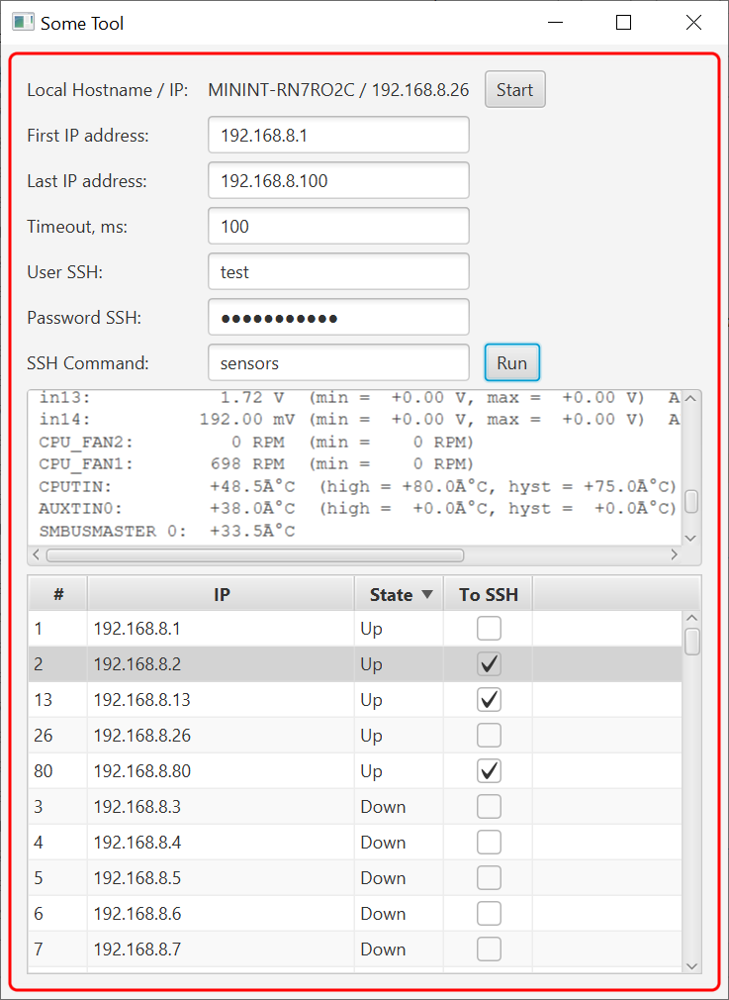

Introduction

- Lists all reachable (ping response) devices in the network
- Able to send sh command through SSH to any host selected in the list
- Mostly suitable in a large corporate LANs with tens or hundreds devices with same or similar configuration
- Mostly compiled from a code examples found on internets, like Stack Overflow, and other sites
IPs Scan
- App is able to scan through set IP range: user needs to enter First IP and Last IP from the same range
- Example shows all reachable (pingable) devices scanned from 192.168.8.1 to *.8.100 on some LAN
- User selectable Timeout parameter in ms. Useful -- faster scanning speed. (Only works with Linux, for now, some issue with privileges on windows)
- Uses a JAVA class isReachable()
SSH Command
- Able to send sh command through SSH to any host selected in the list
- User need to enter user, pass, and command in appropriate fields
- If connection is successful answer is displayed in a text field
- To make a ssh connection app uses a JSch from JCraft SSH library -- pure JAVA implementation of SSH2
To Do List to improve an app

×

- Add a field to enter SSH port number
- Implement method to send sh command to multiple hosts and result in a convenient form (sortable table)
- Answer is displayed in a text field
- Implement threading to increase scanning ant sh command execution speeds
IP address
From Wikipedia:An Protocol address (IP address) is a numerical label assigned to each device connected to a computer network that uses the Internet Protocol for communication. An IP address serves two main functions: host or network interface identification and location addressing. <...> IP addresses are written and displayed in human-readable notations, such as 172.16.254.1 in IPv4.